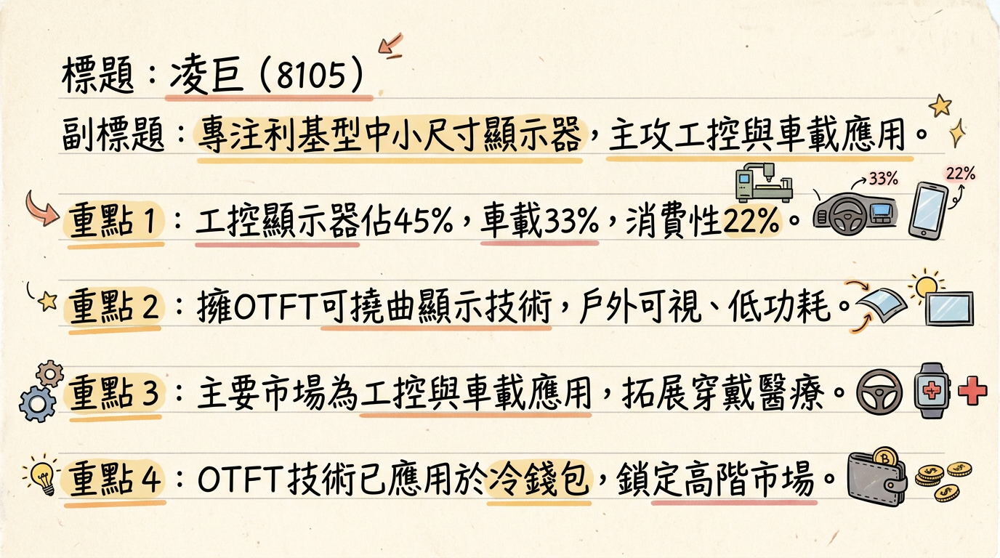
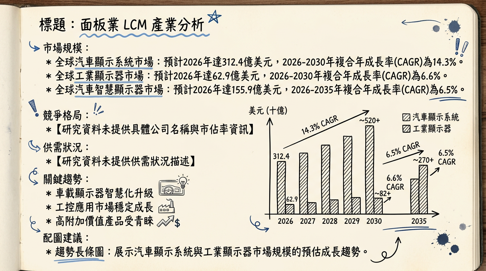
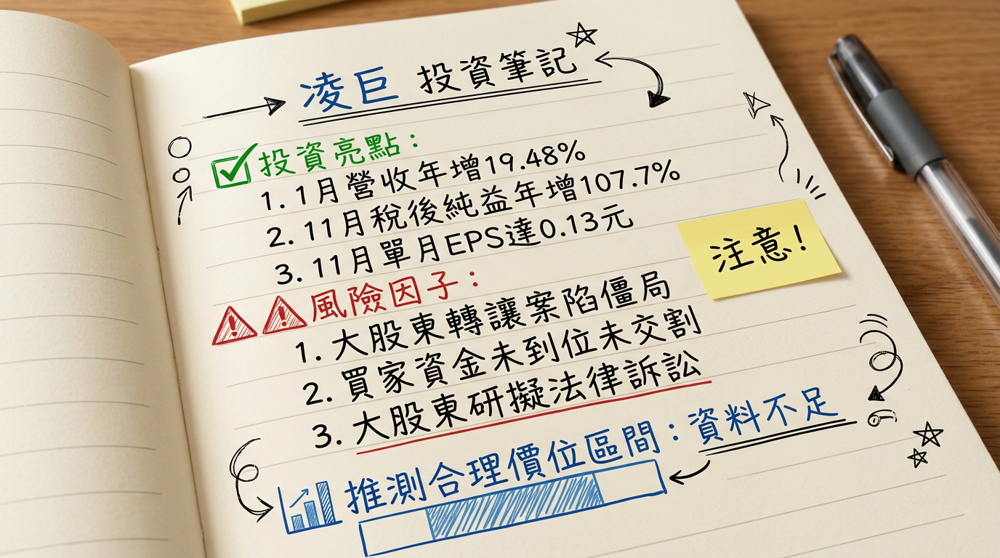

凌巨科技深耕高附加價值的利基型工控與車載顯示器市場，並積極拓展醫療應用及OTFT有機薄膜電晶體技術，為2026年營運力拚轉盈注入新動能。然而，最大股東股權轉讓案的僵局與外部總體經濟波動，仍為公司前景帶來不確定性，需要密切關注其執行力與風險管理。
凌巨科技（8105）專注於中小型尺寸顯示器面板及模組的研發、生產與銷售，核心業務聚焦於高附加價值、長生命週期的利基型應用，特別是工控與車載市場。公司持續優化產品組合，目標提高工控產品的營收佔比。
核心產品/服務：凌巨提供標準顯示屏、車載應用、工控應用、消費性應用、穿戴應用及觸控應用等產品。其核心技術包括戶外可視（Outdoor Readable）顯示技術，並積極開發低功耗、反射式、半穿反式顯示技術、柔性顯示以及OTFT（有機薄膜電晶體）技術。OTFT技術已應用於冷錢包，並鎖定智慧穿戴與醫療等高階應用市場。
製造基地：凌巨在台灣設有3代和4代面板廠，主要生產據點位於桃園八德、苗栗頭份、新竹湖口。中國僅設有後段模組廠。
營收結構（2025年上半年）：| 業務類別 | 營收佔比 |
|---|---|
| 工控業務 | 45% |
| 車用業務 | 33% |
| 消費性電子 | 22% |
凌巨科技近六個月的合併營收數據如下：
| 月份 | 金額 (新台幣億元) | 月增率 (MoM) | 年增率 (YoY) |
|---|---|---|---|
| 2026 年 1 月 | 7.75 | +9.50% | +19.48% |
| 2025 年 12 月 | 7.08 | -1.81% | -10.62% |
| 2025 年 11 月 | 7.21 | +3.06% | -5.99% |
| 2025 年 10 月 | 6.99 | -8.60% | -17.31% |
| 2025 年 9 月 | 7.65 | -3.06% | -6.61% |
| 2025 年 8 月 | 7.89 | +24.52% | +3.00% |
| 年度 | 全年營收 (新台幣億元) | 全年 EPS (元) |
|---|---|---|
| 2024 (實際) | 86.78 - 87.67 | 0.15 |
| 2025 (預估) | 85.91 - 85.96 | -0.64 |
目前券商報告較為稀少且部分已超過6個月，以下為截至2026年3月6日，較近期的券商評等與目標價：
| 券商名稱 | 日期 | 目標價 (新台幣元) | 評等 |
|---|---|---|---|
| 群益證券 (註1) | 2026年1月7日 | 17.3 | 看多 |
| 群益證券 (註2) | 2026年1月28日 | 13.7 | 中立 |
| 英為財情綜合分析師 | 12個月平均目標價 | 13.7 (最高/最低) | N/A |
根據群益證券2026年1月28日報告預估：
群益證券於2026年1月份將凌巨的評等由「看多」（目標價17.3元，2026年1月7日）調整為「中立」（目標價13.7元，2026年1月28日），顯示有調降評等及目標價的狀況。
凌巨近期的利潤率呈現波動，整體而言，2024年以來毛利率和營業利益率呈現先降後升再小幅下滑的趨勢。
近8季的毛利率、營業利益率、稅後淨利率趨勢：| 年度/季度 | 毛利率 (%) | 營業利益率 (%) | 稅後淨利率 (%) |
|---|---|---|---|
| 2025Q3 | 3.72 | -4.02 | 0.02 |
| 2025Q2 | 5.72 | -2.17 | -13.25 |
| 2025Q1 | 6.96 | -1.01 | 2.23 |
| 2024Q4 | 5.56 | -2.81 | 2.27 |
| 2024Q3 | 6.97 | 0.28 | 0.44 |
| 2024Q2 | 1.57 | -7.60 | -3.38 |
| 2024Q1 | 5.64 | -3.23 | 3.31 |
| 年度/季度 | 存貨週轉天數 (天) | 存貨週轉率 (次/年) |
|---|---|---|
| 2025Q3 | 48.18 | 1.87 |
| 2025Q2 | 51.28 | 1.76 |
| 2025Q1 | 61.62 | 1.46 |
| 2024Q4 | 55.75 | 1.61 |
| 2024Q3 | 59.60 | N/A |
| 2024Q2 | 70.64 | N/A |
| 2024Q1 | 70.65 | N/A |
存貨週轉天數從2024年第一季的70.65天逐步下降至2025年第三季的48.18天，顯示公司在存貨管理上有所改善，周轉效率提升，目前未明確指出有異常堆積或備料現象。
近8季應收帳款收現天數趨勢：| 年度/季度 | 應收帳款收現天數 (天) | 應收帳款週轉率 (次/年) |
|---|---|---|
| 2025Q3 | 65.05 | 1.38 |
| 2025Q2 | 59.20 | 1.52 |
| 2025Q1 | 65.86 | 1.37 |
| 2024Q4 | 55.81 | 1.61 |
| 2024Q3 | 46.51 | N/A |
| 2024Q2 | 51.87 | N/A |
| 2024Q1 | 48.50 | N/A |
應收帳款收現天數在2024年間表現較好，但2025年上半年有所上升，至2025年第三季維持在65.05天，顯示客戶付款天數略有拉長，需持續關注現金流狀況。
* 2025年前九個月累計：-1.18億元
* 2024年全年：3,410萬元
自由現金流在2024年為正，但2025年前三季累計轉為負值，顯示近期營運產生的現金流量不足以支應投資或營運活動，需持續關注。
* 日本凸版控股股權轉讓案爭議： 凌巨最大股東日本凸版控股（TOPPAN Holdings Inc.）原定於2025年1月16日與聚奕投資談定分兩階段轉讓53.1%的凌巨股權。
* 第一階段：2025年1月20日完成，聚奕投資支付11億元取得8,150萬股（約18.46%股權）。
* 第二階段：原定於2025年8月下旬進行，聚奕投資應支付20億元取得剩餘34.65%持股，但因買方資金未到位而卡關。截至2026年1月29日，此階段交易仍未完成，日本凸版控股仍持有凌巨34.65%股權，並研擬對聚奕投資提起法律訴訟。此爭議對公司經營權的穩定性構成不確定性。
* 22025年3月21日股東臨時會增選兩席董事，由凌巨總經理杉本克己、新大股東代表郡宏光電副董事長呂昕晨當選。
凌巨科技主要業務集中於工控與車載應用顯示器，屬於中小尺寸顯示器製造業中的利基型市場。
* 汽車顯示系統市場： 預計將從2025年的271.9億美元成長到2026年的312.4億美元 (CAGR 14.9%)，並預計到2030年達到532.5億美元 (2026-2030 CAGR 14.3%)。汽車智慧顯示器市場2025年為147.3億美元，預計到2035年達到276.5億美元 (2026-2035 CAGR 6.5%)。
* 工業顯示器市場： 預計將從2025年的59億美元成長到2026年的62.9億美元 (CAGR 6.6%)，並預計到2030年達到81.1億美元 (2026-2030 CAGR 6.6%)。另一報告指出2024年全球工業展示市場估計為59.5億美元，預計2034年達104.1億美元 (2025-2034 CAGR 6%)。
* 工控與商用顯示面板出貨量： 2025年全球工控與商用顯示面板出貨量預估達3.4億片，佔整體平面顯示器（FPD）的9.4%。主要工控面板營收可望達25億美元，年增15%。
* 2026年全球顯示面板總面積需求預計較去年同期成長6%。
* 整體顯示器面板市場在供應端產能可控且顯示器產能優先級較低的背景下，仍可維持供需平衡。
* 22026年顯示器面板供應格局預計將更為集中，面板廠商的營運策略趨向盈利，有望提升議價權，改善獲利能力。
* 工控與商用顯示（IPC）市場需求穩定、產品壽命長及毛利率高，是面板廠的重要護城河。
* 凌巨 (8105)： 2025年第三季毛利率為3.72%。
* 其他主要面板廠 (2025Q3)： 群創7.89%、友達9.57%、京東方14.44%、華星光電11.69%。LG Display 2025Q4毛利率為13.69%。
註：凌巨的毛利率明顯低於這些大型綜合面板廠，顯示其在利基市場仍面臨競爭壓力或產品組合差異。*目前未能直接搜尋到全球中小尺寸工控與車載顯示面板市場前五大公司及其市佔率的2025-2026年具體公開資料。
由於缺乏具體的最新競爭對手數據，此處根據凌巨自身資訊和產業趨勢進行比較：
| 特性 | 凌巨科技 (8105) | 主要競爭對手 (推斷) |
|---|---|---|
| 技術 | 戶外可視、低功耗、OTFT (已量產、鎖定穿戴/醫療) | 廣泛，包含Mini LED、OLED等高階技術在車載領域快速發展 |
| 產能 | 3代、4.5代線 (少量多樣化優勢，可做客製化) | 大型廠多為5代以上線，注重規模經濟 |
| 客戶 | 工控與車載策略客戶、新開發醫療客戶 (2026量產) | 各領域廣泛，尤其高階車廠對OLED、Mini LED需求強勁 |
| 價格 | 利基型、高附加價值產品，價格相對穩定或議價空間較高 | 大宗產品價格競爭激烈，高階產品溢價較高 |
以下為凌巨與同業（主要為在工控/車載領域有佈局的台灣面板廠商）的比較：
| 公司 | 營收規模 (2025年) | 毛利率 (2025年Q3) | EPS (2025年Q3 / 2024年全年) | 備註 |
|---|---|---|---|---|
| 凌巨(8105) | 全年約85.96億元 | 3.72% | Q3: 0.001元 / 2024全年: 0.15元 | 專注中小型利基型工控與車載應用 |
| 彩晶(6116) | 前11月累計104.98億元 | 未找到最新資料 | Q3: -0.46元 | 聚焦工控/車載，目標營收比重逾5成 (⚠️過時) |
* 高階車載顯示技術演進 (Mini LED 與 OLED)：
* 趨勢： 車用顯示器朝高解析度、高亮度、高對比、曲面設計發展。Mini LED技術預計2025年銷量達675萬台，市占率由3%提升至10%以上。OLED顯示器憑藉自發光、輕薄等優勢，預估2025年出貨量達450萬片，營收占比預期2026年突破10%。
* 影響： 促使面板廠在技術上持續投入研發，具備相關技術的廠商將獲市場先機。
* 工業自動化與智慧製造的顯示介面需求：
* 趨勢： 工業自動化程度提高，HMI設備及IIoT/智慧工廠擴展，推動對高解析度、耐用、即時數據可視化工業顯示器需求。
* 影響： 面板廠需開發更堅固耐用、高可靠性、高亮度的顯示產品，並提供支援IIoT整合的智慧顯示解決方案。
* 柔性與OTFT等新興顯示技術的應用擴展：
* 趨勢： 柔性顯示與OTFT具備可撓曲、輕薄、低成本特性，正延伸至更多利基應用。
* 影響： 為顯示器產品創新設計提供更大空間，尤其在智慧穿戴、醫療設備等高階應用市場，具備這些技術的廠商有望開拓新增長點。
* 機會：
* 利基市場需求穩定： 工控與車載市場持續成長，為凌巨帶來穩定訂單。
* OTFT技術商業化： 已量產並應用於冷錢包，未來可拓展至智慧穿戴與醫療，開拓高附加價值產品線。
* 小世代產線彈性： 少量多樣化生產優勢，能有效因應客製化需求。
* 醫療新客戶： 2026年將有新開發的醫療客戶開始量產，有望成為重要營收貢獻來源。
* 威脅：
* 整體面板市場波動： 儘管專注利基，仍可能受市場供需和價格波動影響。
* OLED技術競爭： OLED在車用顯示器市場滲透率提升，對主要以LCD為基礎的凌巨構成競爭壓力。
* 原物料成本上升： 記憶體價格上漲及原物料成本偏高，可能影響獲利。
* 中國大陸面板廠競爭： 大陸廠商份額擴大，可能加劇中小尺寸面板市場競爭。
* 電動車 (EV)： 電動車快速發展是車載顯示器市場成長主因。凌巨深耕車載應用，直接受益於智慧座艙對高解析度、多功能顯示器的需求。
* AI (人工智慧)： AI影響智慧車載顯示（智能人機互動、駕駛輔助）及工業自動化（AI驅動視覺監控介面），使凌巨的工控與車載產品能與AI趨勢結合。
* HBM (高頻寬記憶體)： 目前未直接找到與凌巨所處產業的顯著連結。
以下為凌巨（8105）在2025年12月初至2026年3月初的近期利多/利空事件：
| 時間點 | 成長動能 | 具體內容 |
|---|---|---|
| 2024年春天 | OTFT技術量產 | 有機薄膜電晶體（OTFT）技術正式量產，初期應用於冷錢包產品 Ledger STAX，為未來智慧穿戴與醫療應用奠定基礎。 |
| 2025年3月24日 | 母公司轉單效益 | 日本凸版控股宣布停止中小尺寸面板生產，將轉向凌巨採購，預計有效挹注凌巨營收，並提升產能利用率。 |
| 2025年2月7日 | 消費性應用回溫 | 拍立得在年輕市場翻紅及企業印表機需求增加，為凌巨的消費性電子業務帶來助益。 |
| 2025年第四季 | 工控與車載訂單回溫 | 管理層預期工控與車載應用需求明顯回溫，帶動該季營運表現優於第三季。工控產品佔比持續提升至45% (2025上半年)。 |
| 22026年 | 醫療新產品量產 | 經過五年耕耘，新開發的醫療客戶預計開始量產，包含兩個採用In-cell Touch技術及高規格Cover貼合製程的機種，估計貢獻年營收約7億元。 |
| 22026年 | 工控與車載出貨成長 | 工控接單平穩，預計2026年工控產品營收比重將再走高。車載應用中，後照鏡等新應用出貨數量將增加，預期2026年整體出貨將成長。 |
| 長期展望 | OTFT技術新應用拓展 | 凌巨將加速OTFT技術佈局，持續開發智慧穿戴與醫療等新應用產品，期望2025年後有更多新產品上市，為營運帶來貢獻，拓展高附加價值市場。 |
| 長期展望 | 購買彩色濾光片設備 | 2025年9月25日董事會通過向日本凸版購買彩色濾光片設備及無形資產授權案，可能提升凌巨在彩色濾光片生產上的自主性與技術能力，有助於未來產品競爭力，但未有具體產能或時間表。 |
2026年凌巨的主要成長動能將來自於利基型市場的穩定需求與新應用開發：
綜合以上分析，凌巨科技在利基型中小尺寸顯示器市場具備其核心競爭力與成長潛力，但同時面臨股權爭議與外部經濟環境挑戰。
本報告由 AI 自動產生，資料來源為公開網路資訊，僅供參考，不構成投資建議。產生時間：2026-03-06 13:05


